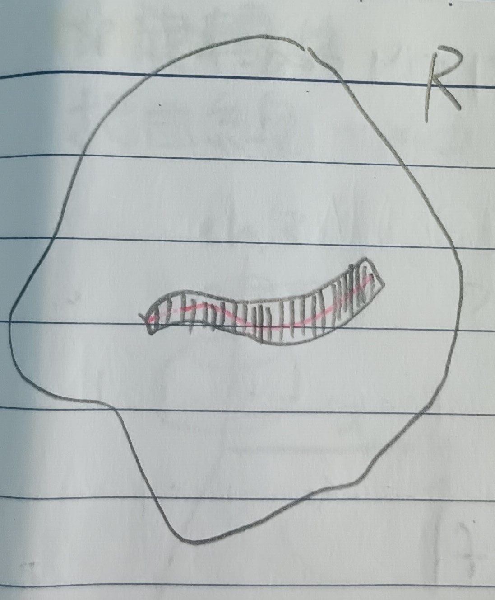

這份筆記是關於各式多變數瑕積分的定義與收斂性質。
有界區域上的瑕積分
考慮下圖1，假定\(f\)在\(R\)中的紅色曲線上沒有定義，則可以考慮把紅線附近移除掉，求剩下區域的積分。
如果\(A(\mbox{紅線附近})\to 0\)的話，就「大概」可以定義\(F\)在\(R\)上的積分：
定義 1：多變數瑕積分 (Multivariable Improper Integral)
給定有界集\(R\)與函數\(f\)，其中函數\(f\)在\(R'\subset R\)上沒有定義。假定我們可以找到一串集合 \[ R_1\subset R_2\subset\cdots\subset R_n\subset\cdots\subset R \] 使得\(R'\subset R-R_n\)且\(A(R_n)\to A(R)\)，則如果極限 \[ \lim_{n\to\infty}\iint_{R_n}f(x,y)dxdy \] 存在，且極限值和\(\{R_n\}\)的選擇無關，則定義積分 \[ \iint_R f(x,y)dxdy=\lim_{n\to\infty}\iint_{R_n}f(x,y)dxdy \]
定理 1-1
給定有界集\(R\)與函數\(f\)，其中函數\(f\)在\(R'\subset
R\)上沒有定義。假定我們可以找到一串集合 \[
R_1\subset R_2\subset\cdots\subset R_n\subset\cdots\subset R
\] 使得\(R'\subset
R-R_n\)且\(A(R_n)\to
A(R)\)。且存在\(M\)使得對於所有\(n\)有 \[
\iint_{R_n}|f(x,y)|dxdy\leq M<\infty
\] 則\(f\)在\(R\)上的瑕積分存在。
證明：顯然\(\iint_{R_n}|f(x,y)|dxdy\)單調遞增且\(\iint_{R_n}|f(x,y)|dxdy\leq M\)，故知 \[
\lim_{n\to\infty}\iint_{R_n}|f(x,y)|dxdy
\] 存在，令其極限值為\(\tilde{I}\)。接著我們考慮\(\iint_{R_n}|f(x,y)|dxdy=I_n\)，我們希望說明\(\{I_n\}\)是柯西序列。由於\(\lim\iint_{R_n}|f(x,y)|dxdy\)存在，故知當\(n,m\)夠大時有 \[
|I_n-I_m|=\left|\iint_{R_n}f-\iint_{R_m}f\right|=\left|\iint_{R_m-R_n}f\right|\leq\iint_{R_m-R_n}|f|<\epsilon
\] 於是可知\(\{I_n\}\)是柯西序列，即極限 \[
\lim_{n\to\infty}\iint_{R_n}f(x,y)dxdy
\] 存在。
接下來，給定\(S_1\subset
S_2\subset\cdots\subset S_n\subset\cdots\subset R\)及\(A(S_n)\to A(R)\)，用和上面一樣的論述也會有
\[
\lim_{n\to\infty}\iint_{S_n}f(x,y)dxdy=J
\] 我們希望說明\(I=J\)。
考慮閉集\(S\subset R\)(其中\(f\)在\(S\)上連續)，則 \[
\left|\iint_S f-\iint_{S\cap
R_n}f\right|=\left|\iint_{S-R_n}f\right|\leq M(A(S-R_n))\leq
M(A(R)-A(R_n))
\] 最後一項趨近於零，故 \[
\lim_{n\to\infty}\iint_{S\cap R_n}f=\iint_S f\mbox{ (☆)}
\] 而 \[
|I-J|=\left|I-\iint_{S_m\cap R_n}f+\iint_{S_m\cap R_n}f-J\right|
\] 我們分開估計，首先當\(m,n\)夠大時我們有 \[
\begin{aligned}
\left|J-\iint_{S_m\cap
R_n}f\right|&=\left|J-\iint_{S_m}f+\iint_{S_m}f-\iint_{S_m\cap
R_n}f\right|\\
&\leq\left|J-\iint_{S_m}f\right|+\underbrace{\left|\iint_{S_m}f-\iint_{S_m\cap
R_n}f\right|}_{\mbox{ (☆)}}<2\epsilon
\end{aligned}
\] 同理有 \[
\left|I-\iint_{S_m\cap R_n}f\right|<2\epsilon
\] 故\(|I-J|<4\epsilon\),
\(I=J\)。QED
無界區域上的瑕積分
定義 2：無界區域上的多變數瑕積分 (Multivariable Improper Integral on Unbounded Region)
給定無界集合\(R\)，並給定一串集合 \[ R_1\subset R_2\subset\cdots\subset R \] 其中\(R_n\)有界並可測，並假設對於所有\(S\subset R\)，都有\(n\)使得\(S\subset R_n\)(這裡不能再假設\(A(R_n)\to A(R)\)了)。若\(\lim\iint_{R_n}f\)存在，則定義瑕積分 \[ \iint_R f=\lim_{n\to\infty}\iint_{R_n}f \]
定理 2-1
給定初始條件同定義2。若存在\(M\)使得對於所有\(n\)有 \[
\iint_{R_n}|f|\leq M<\infty
\] 則\(\iint_R f\)存在。
證明：用和定理1-1中一樣的說法，易知極限
\[
\lim_{n\to\infty}\iint_{R_n}f=I
\] 存在。而給定另一串\(S_1\subset
S_2\subset\cdots\subset R\)。由一開始\(\{R_n\}\)給定的定義知對於所有\(m\)，都存在\(n\)使得\(S_m\subset R_n\)。故\(\iint_{S_n}|f|\leq M\)，即 \[
\lim_{n\to\infty}\iint_{S_n}f=J
\] 也存在。
考慮下圖2，當\(n,m\)夠大時，我們有 \[
\left|\iint_{R_n}f-\iint_{S_m}f\right|\leq\iint_{S_{m'}-S_m}|f|<\epsilon
\]
於是，有 \[ |I-J|=\left|\underbrace{I-\iint){R_n}f}_{<\epsilon}+\underbrace{\iint_{R_n}f-\iint_{S_m}f}_{<\epsilon}+\underbrace{\iint_{S_m}f-J}_{<\epsilon}\right|<3\epsilon \] 即\(I=J\)。QED